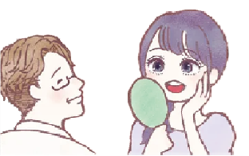

よくあるご質問

Q 受診に際して予約は必要ですか？
A. 当クリニックは完全予約制となっておりますので、事前にご予約をお取りください。
Q カウンセリングを受けたいのですが、費用はかかりますか？
A. 無料でカウンセリングを承っておりますので、費用のことを気にせずに何でも気軽にご相談ください。
Q 他の患者さんと顔を合わせたくないのですが…
A. 当クリニックでは“ワンパーソンシステム”を導入しており、基本的にクリニック内にはお一人の患者様しかいない状態となっています。他の患者様と会わずに受診することが可能ですので、安心してご来院ください。
Q 手術は誰が担当してくれるのですか？
A. 当クリニックの手術はすべて院長が担当します。
手術だけでなく、初診のカウンセリングからアフターフォローまで、一貫して院長が担当いたします。安心してお任せください。
Q 二重まぶた手術を受けたいのですが…ダウンタイムが心配です
A. 当クリニックオリジナルの術式である“LS法”なら、しっかりと二重まぶたを作ることが可能なだけでなく、術後の痛み・腫れが少ない手術が可能になります。
ダウンタイムが心配な方にもおすすめです。
是非、ご検討ください。
Q 二重まぶた手術の際の痛みが不安なのですが…
A. 当クリニックの院長は麻酔科医でもあり、患者様の痛みに対する不安・恐怖に配慮して手術することをモットーとしています。
また様々な麻酔の工夫により、できる限り痛み・腫れを抑えて手術しますのでご安心ください。
Q 二重まぶたの手術を受けたことをまわりに知られたくないのですが…
A. 当クリニックの二重まぶた手術（LS法）は、他の方法と比べて術後の痛み・腫れが少ない手術となっています。
「100％まわりの人に知られることはない」と言うことはできませんが、他の方法よりも気づかれる確率は低いと言えます。
Q LS法と従来の埋没法の違いは何ですか？
A. LS法は埋没法と同様に切開が不要な手術ですが、従来の埋没法のデメリットである後戻りのしやすさや、適応となるまぶたが限られる、デザインに制限があるなどが改善・改良されています。
Q 二重まぶた手術に保証制度はありますか？
A. 当クリニックオリジナルのLS法に、“LS法特別保証制度”を設けております。
仕上がり保証やライン保証、痛み保証、腫れ保証など様々な保証がありますので、安心して手術を受けていただくことができます。
Q 二重まぶた手術の際の痛みが不安なのですが…
A. 当クリニックの院長は麻酔科医でもあり、患者様の痛みに対する不安・恐怖に配慮して手術することをモットーとしています。
また様々な麻酔の工夫により、できる限り痛み・腫れを抑えて手術しますのでご安心ください。
Q 目元の手術以外にも対応していますか？
A. 美容外科手術の豊富な経験・実績を持つ院長が、二重まぶた手術などの目元の手術以外にも、鼻を高くする手術、フェイスラインを整える手術、バストのお悩みを解消する手術など、様々な美容外科手術に対応いたしますので、目元以外のお悩みもお気軽にご相談ください。
Q 抗生物質で薬疹が出るのですが、術後にもらった薬は絶対に飲まないといけませんか？
A. 術後の抗生物質は化膿を防ぐために飲んでいただいていますが、飲まないと必ず化膿する訳ではありません。
できるだけ飲んでいただいてはいますが、薬疹など体に合わない場合は飲まないで様子をみていく場合もあります。
Q 未成年ですが、親に内緒で手術は可能でしょうか？
A. 未成年（18歳未満）の方が手術・治療をお受けになられるには親権者の同意が必要になります。
理想的にはカウンセリング時にご同伴していただくのが良いのですが、お仕事のご都合等でどうしても無理な場合は同意書をご持参いただければ手術は可能です。
また、同意書に記載されている親権者の方に確認のお電話をさせていただくことがありますのであらかじめご了承ください。同意書は便せんやレポート用紙等に以下のように書いて、来院時にお持ちください。
●タイトル：『親権者同意書』
●本文：『私（親権者のお名前）は、（施術を受ける人の名前）が、アーティスクリニックにて（施術名）（例：二重手術）を受ける事に同意いたします。』
●書いた日の日付：『西暦 年 月 日』
●『親権者』
●親権者の住所
●親権者の氏名 印鑑（シャチハタ以外）
●親権者の連絡先電話番号
●『治療を受ける本人』
●治療を受ける人の住所
●治療を受ける人の氏名 印鑑（シャチハタ以外）
●治療を受ける人の連絡先電話番号同意書は以下からダウンロードもできます。印刷していただき必要事項にご記入ご捺印してください
Q カウンセリングを受けてそのまますぐ手術していただくことは可能ですか？
A. ご予約を取られるときに、まずはカウンセリングのみ・手術まで等々できるだけ詳しくご希望をお伝えください。ご希望の施術に沿ったご案内をさせていただきます。
ご予約時にお申し出いただければ、まずカウンセリングを受けていただいてその場で判断していただき、良ろしければそのまま手術を受けていただくことも可能です。
ただしカウンセリングのみでご予約を取られていた場合は、あらためて後日の手術日を予約していただくことになります。
比較的長時間になる施術や、施術前に血液検査が必要な施術の場合は、カウンセリング日と後日の手術日と分けてのご予約をしていただいております。